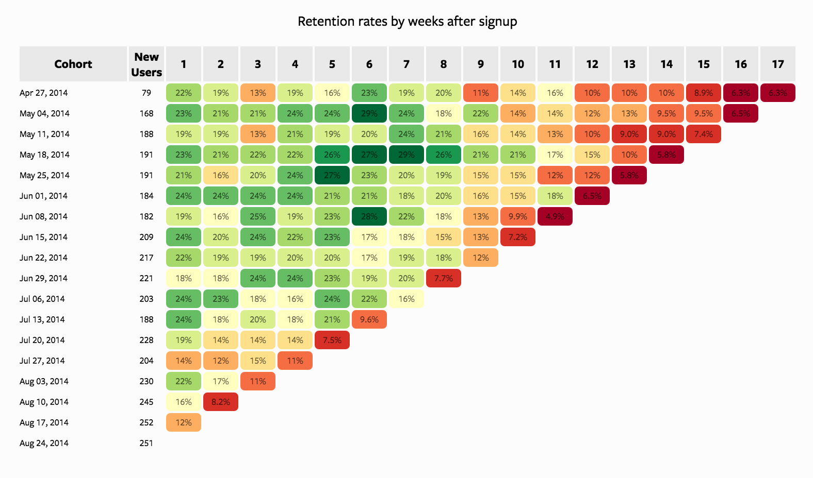

import pandas as pd
import numpy as np
from scipy import stats
import plotly.express as pxSession 11: Cohort Analysis
Cohort Analysis
Pandas
Plotly
Cohort Analysis
Cohort analysis is a technique where you group users/customers into cohorts (groups with a shared characteristic) and track how their behavior evolves over time.
A cohort is typically defined by something like:
- Signup date (most common → acquisition cohorts)
- First purchase
- Marketing channel
- Behavior (e.g., users who used feature X)
Instead of looking at averages across all users, cohort analysis lets you see how different groups behave differently over time.
Important
For the groupings that are not time-dependent, the term segment is more appropriate to use.
Why Cohort Analysis Matters
Aggregate metrics can be misleading. For example if Overall retention = 70% (looks good)
But:
- Old users →
90%retention
- New users →
40%retention
Without cohorts, you miss the problem completely.
Cohort analysis helps you:
- Identify when users churn
- Understand why some cohorts perform better
- Measure impact of campaigns or product changes
- Separate growth (new users) from retention (existing users)
Simple Mental Model
Think of cohorts as batches of users starting at the same time:
| Cohort (Signup Month) | Month 0 | Month 1 | Month 2 | Month 3 |
|---|---|---|---|---|
| Jan users | 100% | 70% | 55% | 40% |
| Feb users | 100% | 60% | 45% | 30% |
| Mar users | 100% | 80% | 65% | 50% |
Insights:
- February cohort performs worse
- March cohort performs better
- Something changed in the system
Types of Cohorts
- Acquisition Cohorts
- Grouped by start date
- Used for retention analysis
- Behavioral Cohorts Grouped by:
- users who completed onboarding vs not
- old vs new
- Segment-Based Cohorts: Grouped by
- Country
- Gender
- Channel
- Country
Interpretation

Looking Vertically
When looking vertically, we fix a specific week (column) and compare how different cohorts perform at the same lifecycle stage.
- Week 1 retention is relatively stable (~18%–24%): Most cohorts begin with similar retention levels, indicating a consistent onboarding experience.
- Mid-term retention (Weeks 4–8) shows strong variability: Some cohorts (e.g., mid-May) perform significantly better, reaching
~27–29%, while others decline earlier. This suggests differences in cohort quality, could by driven by:- acquisition channels
- campaign effectiveness
- audience targeting
- acquisition channels
- Later weeks (10+) show deterioration in newer cohorts: Earlier cohorts (April–May) maintain retention in the
~10–16%range longer, whereas newer cohorts (July–August) drop into single digits faster.
TipInterpretation
There is a clear decline in cohort quality over time. While early engagement remains stable, long-term retention is weakening for newer users. This often indicates scaling acquisition at the cost of quality.
Looking Horizontally
When looking horizontally, we track a single cohort across weeks to understand its lifecycle behavior.
Typical retention decay pattern: Most cohorts follow a gradual decline from
~20–25%down to~5–10%.Early drop-off (Weeks 1–3): A noticeable decline occurs early, reflecting initial churn after signup. This is expected but still critical.
Mid-term stabilization (Weeks 4–8): Stronger cohorts stabilize temporarily (e.g., May 18 cohort maintains high retention longer), suggesting:
- better engagement
- stronger product value perception
- better engagement
Long-term decay (Weeks 10+): All cohorts eventually converge toward low retention (~5–10%), indicating:
- limited long-term stickiness
- possible lack of retention mechanisms (e.g., re-engagement, habit formation)
- limited long-term stickiness
TipInterpretation
The product has reasonable short-term engagement, but struggles with long-term retention. Some cohorts outperform others, indicating that improvements are possible with better targeting or experience design.
Looking Diagonally (Same Calendar Time Across Cohorts)
Diagonal analysis compares cohorts at different lifecycle stages but at the same calendar time.
Each diagonal represents user activity in the same real-world period across different cohorts.
Consistent decline across diagonals: Most diagonals toward the right side of the chart show lower retention
(~5–10%), regardless of cohort.No strong recovery pattern: There is no visible diagonal where all cohorts improve simultaneously.
Tipinterpretation
There is likely a systemic issue affecting all users, not just specific cohorts.
Possible causes:
- product changes negatively impacting engagement
- seasonality effects
- lack of lifecycle marketing (CRM, push, email)
- product changes negatively impacting engagement
Since all cohorts converge to low retention in later periods, the issue is structural, not cohort-specific.
Key Metrics
- Retention Rate: \(Retention = \frac{\text{Active Users at time t}}{\text{Users in cohort at start}}\)
- Churn Rate: \(Churn = 1 - Retention\)
- Lifetime Value (LTV): Total value generated by a cohort over time.
Cohort Analysis | Steps
- Define a cohort: users who signed up in January (monthly)
- Track behavior over time: Activity, purchases, churn
- Aggregate by time periods: Month 1, Month 2, Month 3…
- Visualize:
- Heatmap
- Line plots
- Heatmap
- Compare cohorts: Identify patterns and anomalies
Typical Output (Heatmap Structure)
- Rows → Cohorts (by acquisition month)
- Columns → Time since acquisition
- Values → Retention %
Example interpretation:
- Early drop-off → onboarding issue
- Late drop-off → product value issue
Where It’s Used
- SaaS (retention, churn)
- E-commerce (repeat purchases)
- Telecom (churn analysis, campaigns)
- Mobile apps (engagement tracking)
Tip
In other words, any serivice providing business.
Key Insight
Cohort analysis answers:
What happens to users after they join, not just overall performance?
This makes it one of the most powerful tools in product and marketing analytics.
Case Study: Cohort Analysis
Business Context
A European subscription-based digital service is analyzing customer behavior to better understand retention dynamics over time.
The company acquires customers through multiple channels such as Organic traffic, Paid Advertising, and Referrals. While overall growth has been steady, management has observed that:
- Some acquisition periods seem to generate more loyal customers
- Other periods show faster customer drop-off (churn)
The business wants to understand whether these differences are real and what might be driving them.
Business Objective
Identify which acquisition cohorts perform better or worse over time and understand the possible drivers behind these differences.
Analytical Questions
In this analysis, we will answer the following questions:
- How large is each acquisition cohort?
- What does the overall retention pattern look like across cohorts?
- Which cohorts show stronger or weaker retention over a 12-month horizon?
- Do retention patterns differ by:
- gender,
- marital status,
- income segment,
- country,
- channel,
- campaign,
- device type,
- and plan type?
- Which features seem most strongly associated with customer retention?
Loading Packages
Loading the Data
df = pd.read_csv('../data/cohort/cohort_analysis.csv',
parse_dates = ["acquisition_date", 'cancellation_month'],
errors = "coerce")
df.head()| user_id | acquisition_date | cancellation_month | gender | marital_status | age | income_segment | country | channel | campaign_id | device_type | plan_type | |
|---|---|---|---|---|---|---|---|---|---|---|---|---|
| 0 | 1 | 2024-07-01 | 2025-02-01 | Male | Married | 31 | Medium | Germany | Paid Ads | Paid Ads_C | iOS | Standard |
| 1 | 2 | 2024-04-01 | 2024-05-01 | Male | Single | 54 | Premium | Netherlands | Referral | Referral_B | iOS | Standard |
| 2 | 3 | 2024-05-01 | 2024-07-01 | Male | Single | 34 | Medium | Poland | Paid Ads | Paid Ads_A | Android | Standard |
| 3 | 4 | 2024-07-01 | NaN | Male | Married | 38 | High | Belgium | Organic | Organic_C | Android | Standard |
| 4 | 5 | 2024-03-01 | 2024-04-01 | Male | Single | 25 | Low | Sweden | Paid Ads | Paid Ads_A | Android | Basic |
First Look at the Data
df.shape(12000, 12)df.info()<class 'pandas.DataFrame'>
RangeIndex: 12000 entries, 0 to 11999
Data columns (total 12 columns):
# Column Non-Null Count Dtype
--- ------ -------------- -----
0 user_id 12000 non-null int64
1 acquisition_date 12000 non-null datetime64[us]
2 cancellation_month 7066 non-null str
3 gender 12000 non-null str
4 marital_status 12000 non-null str
5 age 12000 non-null int64
6 income_segment 11369 non-null str
7 country 12000 non-null str
8 channel 12000 non-null str
9 campaign_id 12000 non-null str
10 device_type 12000 non-null str
11 plan_type 12000 non-null str
dtypes: datetime64[us](1), int64(2), str(9)
memory usage: 1.8 MBdf.isnull().sum()user_id 0
acquisition_date 0
cancellation_month 4934
gender 0
marital_status 0
age 0
income_segment 631
country 0
channel 0
campaign_id 0
device_type 0
plan_type 0
dtype: int64df.describe(include="all")| user_id | acquisition_date | cancellation_month | gender | marital_status | age | income_segment | country | channel | campaign_id | device_type | plan_type | |
|---|---|---|---|---|---|---|---|---|---|---|---|---|
| count | 12000.00000 | 12000 | 7066 | 12000 | 12000 | 12000.000000 | 11369 | 12000 | 12000 | 12000 | 12000 | 12000 |
| unique | NaN | NaN | 19 | 2 | 2 | NaN | 4 | 12 | 3 | 9 | 3 | 3 |
| top | NaN | NaN | 2024-05-01 | Female | Single | NaN | High | Netherlands | Paid Ads | Paid Ads_A | Android | Standard |
| freq | NaN | NaN | 932 | 6016 | 7087 | NaN | 4823 | 1057 | 4854 | 1636 | 6582 | 5979 |
| mean | 6000.50000 | 2024-04-15 20:46:48 | NaN | NaN | NaN | 34.630250 | NaN | NaN | NaN | NaN | NaN | NaN |
| min | 1.00000 | 2024-01-01 00:00:00 | NaN | NaN | NaN | 18.000000 | NaN | NaN | NaN | NaN | NaN | NaN |
| 25% | 3000.75000 | 2024-02-01 00:00:00 | NaN | NaN | NaN | 28.000000 | NaN | NaN | NaN | NaN | NaN | NaN |
| 50% | 6000.50000 | 2024-04-01 00:00:00 | NaN | NaN | NaN | 34.000000 | NaN | NaN | NaN | NaN | NaN | NaN |
| 75% | 9000.25000 | 2024-06-01 00:00:00 | NaN | NaN | NaN | 41.000000 | NaN | NaN | NaN | NaN | NaN | NaN |
| max | 12000.00000 | 2024-08-01 00:00:00 | NaN | NaN | NaN | 65.000000 | NaN | NaN | NaN | NaN | NaN | NaN |
| std | 3464.24595 | NaN | NaN | NaN | NaN | 9.514896 | NaN | NaN | NaN | NaN | NaN | NaN |
What do we have so far
At this stage, we want to confirm three things:
- the dataset is at the customer level, meaning each row represents one user.
- Second,
acquisition_datetells us when the customer entered the business, whilecancellation_monthtells us whether the customer churned and, if so, when. - several categorical variables are available for segmentation later in the analysis. These variables will allow us to compare retention across different customer groups.
Variable Description
The dataset contains customer-level information available at the time of acquisition, along with churn-related variables used later for retention analysis.
| Variable | Description |
|---|---|
user_id |
Unique customer identifier |
acquisition_date |
Date the customer joined the service |
gender |
Customer gender |
marital_status |
Customer marital status |
age |
Customer age at acquisition |
income_segment |
Income segment derived from age |
country |
Customer country |
region |
Region derived from country (e.g., Western, Eastern Europe) |
channel |
Acquisition channel (Organic, Paid Ads, Referral) |
campaign_id |
Campaign identifier linked to acquisition |
device_type |
Device used at acquisition (Android, iOS, Web) |
plan_type |
Subscription plan (Basic, Standard, Premium) |
engagement_score |
Latent customer quality indicator (simulated) |
Data Preperation | Cohort Month
df["acquisition_month"] = df["acquisition_date"].dt.to_period("M")
df[["user_id", "acquisition_date", "acquisition_month"]].head()| user_id | acquisition_date | acquisition_month | |
|---|---|---|---|
| 0 | 1 | 2024-07-01 | 2024-07 |
| 1 | 2 | 2024-04-01 | 2024-04 |
| 2 | 3 | 2024-05-01 | 2024-05 |
| 3 | 4 | 2024-07-01 | 2024-07 |
| 4 | 5 | 2024-03-01 | 2024-03 |
Data Preperation | Churn Flag
A missing cancellation date does not mean the customer churned in month 12.
It means the customer is still active during the observation window.
So we first create an explicit churn flag.
df["is_churned"] = df["cancellation_month"].notna().astype(int)
df["is_churned"].value_counts()is_churned
1 7066
0 4934
Name: count, dtype: int64Data Preperation | Calculate the Month of Churn
We calculate the number of months between acquisition and cancellation only for users who actually churned.
df["acquisition_date"] = pd.to_datetime(df["acquisition_date"], errors="coerce")
df["cancellation_month"] = pd.to_datetime(df["cancellation_month"], errors="coerce")
df["month_churned"] = np.where(
df["cancellation_month"].notna(),
(
(df["cancellation_month"].dt.year - df["acquisition_date"].dt.year) * 12
+ (df["cancellation_month"].dt.month - df["acquisition_date"].dt.month)
),
np.nan
)
df[["user_id", "acquisition_date", "acquisition_month","cancellation_month", "month_churned"]].head(10)| user_id | acquisition_date | acquisition_month | cancellation_month | month_churned | |
|---|---|---|---|---|---|
| 0 | 1 | 2024-07-01 | 2024-07 | 2025-02-01 | 7.0 |
| 1 | 2 | 2024-04-01 | 2024-04 | 2024-05-01 | 1.0 |
| 2 | 3 | 2024-05-01 | 2024-05 | 2024-07-01 | 2.0 |
| 3 | 4 | 2024-07-01 | 2024-07 | NaT | NaN |
| 4 | 5 | 2024-03-01 | 2024-03 | 2024-04-01 | 1.0 |
| 5 | 6 | 2024-08-01 | 2024-08 | NaT | NaN |
| 6 | 7 | 2024-05-01 | 2024-05 | NaT | NaN |
| 7 | 8 | 2024-05-01 | 2024-05 | 2024-06-01 | 1.0 |
| 8 | 9 | 2024-07-01 | 2024-07 | NaT | NaN |
| 9 | 10 | 2024-02-01 | 2024-02 | 2024-12-01 | 10.0 |
Data Preperation | Keep Only Valid Churn Months
For a 12-month cohort study, we only want churn months from 1 to 12.
df["month_churned"] = df["month_churned"].where(
df["month_churned"].between(1, 12),
np.nan
)
df["month_churned"].value_counts(dropna=False).sort_index()month_churned
1.0 2392
2.0 1363
3.0 845
4.0 585
5.0 443
6.0 362
7.0 266
8.0 248
9.0 182
10.0 168
11.0 113
12.0 99
NaN 4934
Name: count, dtype: int64
Important
This step is very important.
A value from 1 to 12 means the customer churned during that month of tenure.
A missing value means the customer did not churn during the 12-month observation window.
This distinction is critical because otherwise active users may be incorrectly treated as churned users.
Data Preperation | Cohort Size
Now we calculate how many users entered in each acquisition month.
cohort_size = (
df.groupby("acquisition_month")
.agg(new_users=("user_id", "count"))
.reset_index()
)
cohort_size| acquisition_month | new_users | |
|---|---|---|
| 0 | 2024-01 | 1502 |
| 1 | 2024-02 | 1528 |
| 2 | 2024-03 | 1465 |
| 3 | 2024-04 | 1509 |
| 4 | 2024-05 | 1541 |
| 5 | 2024-06 | 1493 |
| 6 | 2024-07 | 1500 |
| 7 | 2024-08 | 1462 |
Important
This chart shows the size of each acquisition cohort.
Before comparing retention performance, it is always useful to inspect cohort sizes, because very small cohorts may produce unstable patterns, while larger cohorts provide more reliable retention estimates.
Data Preperation | Count Actual Churn Events by Cohort and Tenure Month
Next, we count only real churn events.
cohort_churn = (
df[df["month_churned"].notna()]
.groupby(["acquisition_month", "month_churned"])
.agg(users=("user_id", "count"))
.reset_index()
)
cohort_churn["month_churned"] = cohort_churn["month_churned"].astype(int)
cohort_churn.head(15)| acquisition_month | month_churned | users | |
|---|---|---|---|
| 0 | 2024-01 | 1 | 148 |
| 1 | 2024-01 | 2 | 95 |
| 2 | 2024-01 | 3 | 79 |
| 3 | 2024-01 | 4 | 76 |
| 4 | 2024-01 | 5 | 52 |
| 5 | 2024-01 | 6 | 49 |
| 6 | 2024-01 | 7 | 41 |
| 7 | 2024-01 | 8 | 37 |
| 8 | 2024-01 | 9 | 24 |
| 9 | 2024-01 | 10 | 26 |
| 10 | 2024-01 | 11 | 11 |
| 11 | 2024-01 | 12 | 13 |
| 12 | 2024-02 | 1 | 155 |
| 13 | 2024-02 | 2 | 110 |
| 14 | 2024-02 | 3 | 90 |
Data Preperation | Full 12-Month Grid
Some cohorts may have no churn in a particular month. That does not mean the month should disappear from the table.
So we create a complete grid from month 1 to month 12 for every cohort.
max_month = 12
tenure_range = np.arange(1, max_month + 1)
full_index = pd.MultiIndex.from_product(
[cohort_size["acquisition_month"].unique(), tenure_range],
names=["acquisition_month", "month_churned"]
)
cohort_data = (
cohort_churn
.set_index(["acquisition_month", "month_churned"])
.reindex(full_index, fill_value=0)
.reset_index()
)
cohort_data.head(15)| acquisition_month | month_churned | users | |
|---|---|---|---|
| 0 | 2024-01 | 1 | 148 |
| 1 | 2024-01 | 2 | 95 |
| 2 | 2024-01 | 3 | 79 |
| 3 | 2024-01 | 4 | 76 |
| 4 | 2024-01 | 5 | 52 |
| 5 | 2024-01 | 6 | 49 |
| 6 | 2024-01 | 7 | 41 |
| 7 | 2024-01 | 8 | 37 |
| 8 | 2024-01 | 9 | 24 |
| 9 | 2024-01 | 10 | 26 |
| 10 | 2024-01 | 11 | 11 |
| 11 | 2024-01 | 12 | 13 |
| 12 | 2024-02 | 1 | 155 |
| 13 | 2024-02 | 2 | 110 |
| 14 | 2024-02 | 3 | 90 |
Data Preperation | Merge Cohort Size
cohort_data = cohort_data.merge(cohort_size, on="acquisition_month", how="left")
cohort_data.head(15)| acquisition_month | month_churned | users | new_users | |
|---|---|---|---|---|
| 0 | 2024-01 | 1 | 148 | 1502 |
| 1 | 2024-01 | 2 | 95 | 1502 |
| 2 | 2024-01 | 3 | 79 | 1502 |
| 3 | 2024-01 | 4 | 76 | 1502 |
| 4 | 2024-01 | 5 | 52 | 1502 |
| 5 | 2024-01 | 6 | 49 | 1502 |
| 6 | 2024-01 | 7 | 41 | 1502 |
| 7 | 2024-01 | 8 | 37 | 1502 |
| 8 | 2024-01 | 9 | 24 | 1502 |
| 9 | 2024-01 | 10 | 26 | 1502 |
| 10 | 2024-01 | 11 | 11 | 1502 |
| 11 | 2024-01 | 12 | 13 | 1502 |
| 12 | 2024-02 | 1 | 155 | 1528 |
| 13 | 2024-02 | 2 | 110 | 1528 |
| 14 | 2024-02 | 3 | 90 | 1528 |
Data Preperation | Calculate Metrics
cohort_data = cohort_data.sort_values(["acquisition_month", "month_churned"])
cohort_data["cumulative_churn"] = (
cohort_data.groupby("acquisition_month")["users"].cumsum()
)
cohort_data["active_users"] = (
cohort_data["new_users"] - cohort_data["cumulative_churn"]
)
cohort_data["retention_rate"] = (
cohort_data["active_users"] / cohort_data["new_users"]
)
cohort_data["acquisition_month"] = cohort_data["acquisition_month"].astype(str)
cohort_data.head(15)| acquisition_month | month_churned | users | new_users | cumulative_churn | active_users | retention_rate | |
|---|---|---|---|---|---|---|---|
| 0 | 2024-01 | 1 | 148 | 1502 | 148 | 1354 | 0.901465 |
| 1 | 2024-01 | 2 | 95 | 1502 | 243 | 1259 | 0.838216 |
| 2 | 2024-01 | 3 | 79 | 1502 | 322 | 1180 | 0.785619 |
| 3 | 2024-01 | 4 | 76 | 1502 | 398 | 1104 | 0.735020 |
| 4 | 2024-01 | 5 | 52 | 1502 | 450 | 1052 | 0.700399 |
| 5 | 2024-01 | 6 | 49 | 1502 | 499 | 1003 | 0.667776 |
| 6 | 2024-01 | 7 | 41 | 1502 | 540 | 962 | 0.640479 |
| 7 | 2024-01 | 8 | 37 | 1502 | 577 | 925 | 0.615846 |
| 8 | 2024-01 | 9 | 24 | 1502 | 601 | 901 | 0.599867 |
| 9 | 2024-01 | 10 | 26 | 1502 | 627 | 875 | 0.582557 |
| 10 | 2024-01 | 11 | 11 | 1502 | 638 | 864 | 0.575233 |
| 11 | 2024-01 | 12 | 13 | 1502 | 651 | 851 | 0.566578 |
| 12 | 2024-02 | 1 | 155 | 1528 | 155 | 1373 | 0.898560 |
| 13 | 2024-02 | 2 | 110 | 1528 | 265 | 1263 | 0.826571 |
| 14 | 2024-02 | 3 | 90 | 1528 | 355 | 1173 | 0.767670 |
At this point:
usersshows how many users churned in a given tenure month,cumulative_churnshows how many users have churned up to that point,active_usersshows how many users remain,- and
retention_rateshows the share of the original cohort still active.
This table is the analytical foundation for both the heatmap and the line plots.
Cohort Retention Heatmap
A heatmap is one of the most common and effective ways to visualize cohort retention.
In this chart:
- each row represents an acquisition cohort,
- each column represents the number of months since acquisition,
- and each cell shows the retention rate for that cohort at that point in time.
Step 1: Prepare the Heatmap Table
We first reshape the cohort retention table into a matrix format where:
- rows = acquisition cohorts,
- columns = tenure months,
- values = retention rate.
heatmap_data = cohort_data.pivot(
index="acquisition_month",
columns="month_churned",
values="retention_rate",
)
heatmap_data| month_churned | 1 | 2 | 3 | 4 | 5 | 6 | 7 | 8 | 9 | 10 | 11 | 12 |
|---|---|---|---|---|---|---|---|---|---|---|---|---|
| acquisition_month | ||||||||||||
| 2024-01 | 0.901465 | 0.838216 | 0.785619 | 0.735020 | 0.700399 | 0.667776 | 0.640479 | 0.615846 | 0.599867 | 0.582557 | 0.575233 | 0.566578 |
| 2024-02 | 0.898560 | 0.826571 | 0.767670 | 0.726440 | 0.685864 | 0.649869 | 0.628272 | 0.607330 | 0.587042 | 0.569372 | 0.553010 | 0.540576 |
| 2024-03 | 0.651195 | 0.494198 | 0.423208 | 0.379522 | 0.345392 | 0.325597 | 0.305802 | 0.291468 | 0.283959 | 0.273038 | 0.270307 | 0.264164 |
| 2024-04 | 0.644798 | 0.487078 | 0.408880 | 0.370444 | 0.341948 | 0.322068 | 0.308151 | 0.298211 | 0.287608 | 0.280318 | 0.273691 | 0.269052 |
| 2024-05 | 0.755354 | 0.603504 | 0.522388 | 0.467229 | 0.420506 | 0.384166 | 0.363400 | 0.345230 | 0.328358 | 0.315380 | 0.305646 | 0.299805 |
| 2024-06 | 0.744139 | 0.582050 | 0.473543 | 0.409243 | 0.373074 | 0.344943 | 0.318151 | 0.299397 | 0.287341 | 0.270596 | 0.260549 | 0.252512 |
| 2024-07 | 0.905333 | 0.823333 | 0.773333 | 0.722000 | 0.688000 | 0.651333 | 0.627333 | 0.596000 | 0.580000 | 0.561333 | 0.550667 | 0.539333 |
| 2024-08 | 0.903557 | 0.841313 | 0.778386 | 0.733242 | 0.692886 | 0.661423 | 0.638167 | 0.610807 | 0.588919 | 0.578659 | 0.567031 | 0.558140 |
Important
This table is the direct input for the heatmap.
For example, if a value in column 3 is 0.72, it means that 72% of the original cohort is still active after 3 months.
Create the Heatmap
fig = px.imshow(
heatmap_data,
aspect="auto",
color_continuous_scale="Blues",
text_auto=".1%",
labels={
"x": "Months Since Acquisition",
"y": "Acquisition Month",
"color": "Retention Rate",
},
title="Cohort Retention Heatmap"
)
fig.update_layout(
xaxis_title="Months Since Acquisition",
yaxis_title="Acquisition Month"
)
fig.show()